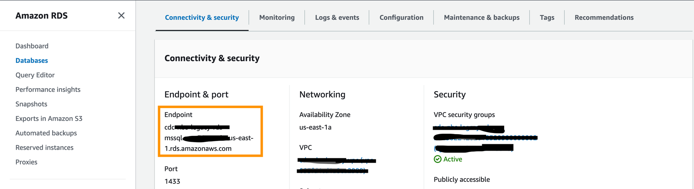
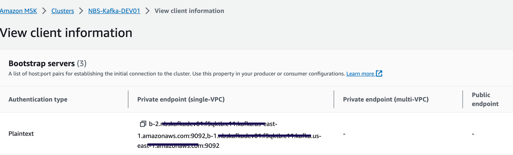
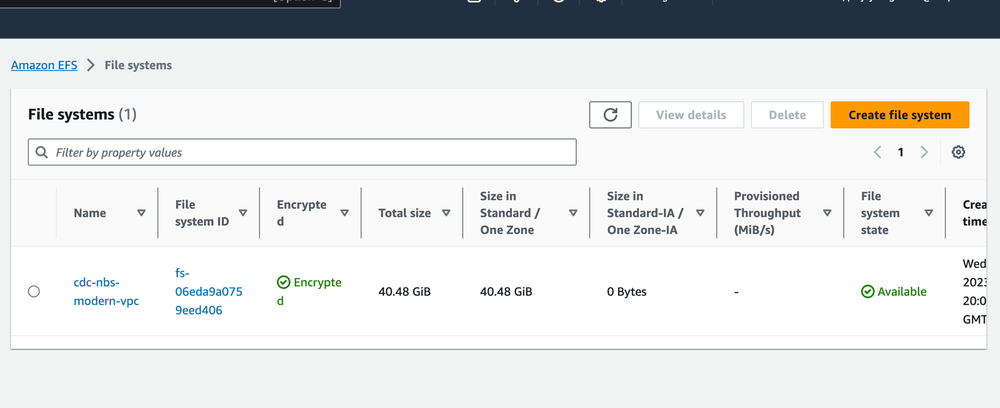

Deploy the Data Ingestion service for NBS 7
This page walks through deploying the Data Ingestion service, including database setup and Helm chart installation.
On this page
Before you begin
The DataIngestion service utilizes three databases: NBS_Msgoute, NBS_ODSE and NBS_DataIngest. NBS_DataIngest is a new database essential for ingesting, validating Electronic Lab Reports (ELR), converting them into XML payloads, and integrating these XMLs into the NBS_MSGOUT database. It must be created before deploying the app on the EKS cluster.
Create the NBS_DataIngest database
Run the following SQL scripts before deploying the Data Ingestion service.
-
Create the database:
IF NOT EXISTS(SELECT * FROM sys.databases WHERE name = 'NBS_DataIngest') BEGIN CREATE DATABASE NBS_DataIngest END GO USE NBS_DataIngest GO -
Grant permissions for the
nbs_odsuser:USE [NBS_DataIngest] GO CREATE USER [nbs_ods] FOR LOGIN [nbs_ods] GO USE [NBS_DataIngest] GO ALTER USER [nbs_ods] WITH DEFAULT_SCHEMA=[dbo] GO USE [NBS_DataIngest] GO ALTER ROLE [db_owner] ADD MEMBER [nbs_ods] GO
Liquibase
- Data Ingestion includes a built-in Liquibase integration that automatically applies database schema changes on deployment.
- DB changes detail can be reviewed here:
- See Deploy Data Ingestion using Helm for deployment steps.
Liquibase DB change verification
- To verify whether the database changes were applied, first ensure the DI container is stable and running; since the container manages Liquibase, it won’t start if Liquibase fails.
- If there is failure by Liquibase, the DI pod will be unstable, and specific error can be found within the container log.
Deploy Data Ingestion using Helm
- Use the
values.yamlfile supplied in thenbs-helm-vX.Y.Z.ziprelease package. Set the ECR repository, ECR image tag, database server endpoints, MSK (Kafka) bootstrap server, and ingress host values.- Navigate to the NEDSS-Helm/releases page.
- Scroll down to the Assets listed for the latest or previous releases.
- Download the zip file for the release.
- Find the
values.yamlfile undercharts\dataingestion-service.
- Confirm that DNS entries for the following host were created and point to the network load balancer in front of your Kubernetes cluster (this must be the ACTIVE NLB provisioned by
nginx-ingressin the base install steps). Make this change in your authoritative DNS service (for example, Route 53). ReplaceEXAMPLE_DOMAINwith your domain name invalues.yaml. See the ingress controller domain table for reference. DataIngestion service application:data.site_name.example_domain.com -
Set the image repository and tag:
image: repository: "quay.io/us-cdcgov/cdc-nbs-modernization/data-ingestion-service" pullPolicy: IfNotPresent tag: <release-version-tag> # for example, v1.0.1 -
To enable RTR ingress, set
reportingService.enabledto"true". Set it to"false"if RTR services are not used:reportingService: enabled: "true" -
Set the JDBC connection values.
NBS_DataIngestis the newly created database for the Data Ingestion service.NBS_MSGOUTEandNBS_ODSEare existing NBS databases. Thedbservervalue is the database server endpoint only; do not include the port number.
jdbc: dbserver: "EXAMPLE_DB_ENDPOINT" username: "EXAMPLE_ODSE_DB_USER" password: "EXAMPLE_ODSE_DB_USER_PASSWORD" -
Set the Kafka broker endpoint. Use either of the two private (plaintext) endpoints:

kafka: cluster: "EXAMPLE_MSK_KAFKA_ENDPOINT" -
Set
efsFileSystemIdto the EFS file system ID from the AWS console:
efsFileSystemId: "EXAMPLE_EFS_ID" -
Set the Keycloak auth URI. In the default configuration this value should not need to change unless the name or namespace of the Keycloak pod is modified:
authUri: "http://keycloak.default.svc.cluster.local/auth/realms/NBS" -
Optional: Configure SFTP for manual ELR file drop-off. Data Ingestion can poll ELRs from an external SFTP server. To enable this, set
sftp.enabledto"enabled"and provide the appropriate host, username, and password. If the SFTP server is unavailable or not needed, setsftp.enabledto"disabled"or leave it empty:sftp: enabled: "EXAMPLE_SFTP_ENABLED" host: ""EXAMPLE_SFTP_HOST username: "EXAMPLE_SFTP_USER" password: "EXAMPLE_SFTP_PASS" elrFileExtns: "txt,hl7" filePaths: "/"
For more information about SFTP support, please see: data-ingestion-sftp-support
-
Install the Data Ingestion service:
helm install dataingestion-service -f ./dataingestion-service/values.yaml dataingestion-serviceConfirm the pod is running before continuing:
kubectl get pods -
Validate the service:
https://<data.EXAMPLE_DOMAIN>/ingestion/actuator/info https://<data.EXAMPLE_DOMAIN>/ingestion/actuator/health -
To enable Swagger for testing (disabled by default in production), set
springBootProfiletodevundercharts/dataingestion-service/values.yaml:https://<data.EXAMPLE_DOMAIN>/ingestion/swagger-ui/index.html#/